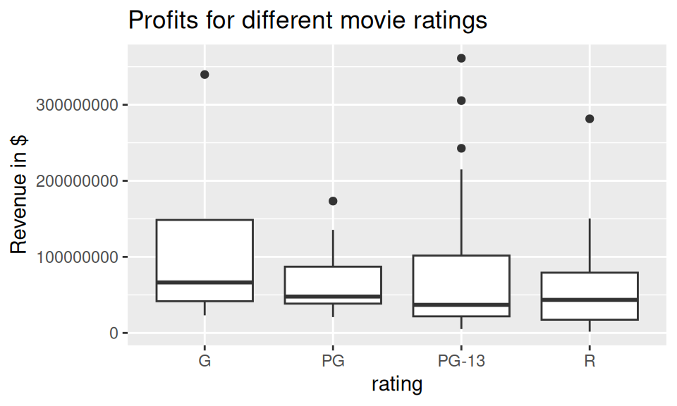

C Tips and Tricks
Needed packages
Let’s load all the packages needed for this chapter (this assumes you’ve already installed them). Recall from our discussion in Section 4.4 that loading the tidyverse package by running library(tidyverse) loads the following commonly used data science packages all at once:
ggplot2for data visualizationdplyrfor data wranglingtidyrfor converting data to “tidy” formatreadrfor importing spreadsheet data into R- As well as the more advanced
purrr,tibble,stringr, andforcatspackages
If needed, read Section 1.3 for information on how to install and load R packages.
C.1 Data wrangling
In this Section, we address some of the most common data wrangling questions we’ve encountered in student projects (shout out to Dr. Jenny Smetzer for her work setting this up!):
- C.1.1: Dealing with missing values
- C.1.2: Reordering bars in a barplot
- C.1.3: Showing money on an axis
- C.1.4: Changing values inside cells
- C.1.5: Converting a numerical variable to a categorical one
- C.1.6: Computing proportions
- C.1.7: Dealing with %, commas, and $

Let’s load an example movies dataset, pare down the rows and columns a bit, and then show the first 10 rows using slice().
movies_ex <- read_csv("https://moderndive.com/data/movies.csv") %>%
filter(type %in% c("action", "comedy", "drama", "animated", "fantasy", "rom comedy")) %>%
select(-over200)
movies_ex %>%
slice(1:10)# A tibble: 10 × 5
name score rating type millions
<chr> <dbl> <chr> <chr> <dbl>
1 2 Fast 2 Furious 48.9000 PG-13 action NA
2 A Guy Thing 39.5 PG-13 rom comedy 15.545
3 A Man Apart 42.9000 R action 26.2480
4 A Mighty Wind 79.9000 PG-13 comedy 17.781
5 Agent Cody Banks 57.9000 PG action 47.8110
6 Alex & Emma 35.1000 PG-13 rom comedy 14.219
7 American Wedding 50.7000 R comedy 104.441
8 Anger Management 62.6000 PG-13 comedy 134.404
9 Anything Else 63.3000 R rom comedy 3.21200
10 Bad Boys II 38.1000 R action 138.397 C.1.1 Dealing with missing values
You see the revenue in millions value for the movie “2 Fast 2 Furious” is NA (missing). So the following occurs when computing the median revenue:
# A tibble: 1 × 1
mean_profit
<dbl>
1 NAYou should always think about why a data value might be missing and what that missingness may mean. For example, imagine you are conducting a study on the effects of smoking on lung cancer and a lot of your patients’ data is missing because they died of lung cancer. If you just “sweep these patients under the rug” and ignore them, you are clearly biasing the results.
While there are statistical methods to deal with missing data they are beyond the reach of this class. The easiest thing to do is to remove all missing cases, but you should always at the very least report to the reader if you do so, as by removing the missing values you may be biasing your results.
You can do this with a na.rm = TRUE argument like so:
# A tibble: 1 × 1
mean_profit
<dbl>
1 43.4270If you decide you want to remove the row with the missing data, you can use the filter function like so:
# A tibble: 10 × 5
name score rating type millions
<chr> <dbl> <chr> <chr> <dbl>
1 A Guy Thing 39.5 PG-13 rom comedy 15.545
2 A Man Apart 42.9000 R action 26.2480
3 A Mighty Wind 79.9000 PG-13 comedy 17.781
4 Agent Cody Banks 57.9000 PG action 47.8110
5 Alex & Emma 35.1000 PG-13 rom comedy 14.219
6 American Wedding 50.7000 R comedy 104.441
7 Anger Management 62.6000 PG-13 comedy 134.404
8 Anything Else 63.3000 R rom comedy 3.21200
9 Bad Boys II 38.1000 R action 138.397
10 Bad Santa 75.8000 R comedy 59.5230 We see “2 Fast 2 Furious” is now gone.
C.1.2 Reordering bars in a barplot
Let’s compute the total revenue for each movie type and plot a barplot.
revenue_by_type <- movies_ex %>%
group_by(type) %>%
summarize(total_revenue = sum(millions))
revenue_by_type# A tibble: 6 × 2
type total_revenue
<chr> <dbl>
1 action NA
2 animated 561.306
3 comedy 2286.81
4 drama 840.038
5 fantasy 508.580
6 rom comedy 492.282ggplot(revenue_by_type, aes(x = type, y = total_revenue)) +
geom_col() +
labs(x = "Movie genre", y = "Total box office revenue (in millions of $)")
Say we want to reorder the categorical variable type so that the bars show in a different order. We can reorder the bars by manually defining the order of the levels in the factor() command:
type_levels <- c("rom comedy", "action", "drama", "animated", "comedy", "fantasy")
revenue_by_type <- revenue_by_type %>%
mutate(type = factor(type, levels = type_levels))
ggplot(revenue_by_type, aes(x = type, y = total_revenue)) +
geom_col() +
labs(x = "Movie genre", y = "Total boxoffice revenue (in millions of $)")
Or if you want to reorder type in ascending order of total_revenue, we use reorder()
revenue_by_type <- revenue_by_type %>%
mutate(type = reorder(type, total_revenue))
ggplot(revenue_by_type, aes(x = type, y = total_revenue)) +
geom_col() +
labs(
x = "Movie genre", y = "Total boxoffice revenue (in millions of $)"
)
Or if you want to reorder type in descending order of total_revenue, just put
a - sign in front of -total_revenue in reorder():
revenue_by_type <- revenue_by_type %>%
mutate(type = reorder(type, -total_revenue))
ggplot(revenue_by_type, aes(x = type, y = total_revenue)) +
geom_col() +
labs(
x = "Movie genre", y = "Total boxoffice revenue (in millions of $)"
)
For more advanced categorical variable (i.e. factor) manipulations, check out
the forcats package. Note: forcats is an anagram of factors

C.1.3 Showing money on an axis
movies_ex <- movies_ex %>%
mutate(revenue = millions * 10^6)
ggplot(data = movies_ex, aes(x = rating, y = revenue)) +
geom_boxplot() +
labs(x = "rating", y = "Revenue in $", title = "Profits for different movie ratings")
Google “ggplot2 axis scale dollars” and click on the first link and search for the word “dollars”. You’ll find:
# Don't forget to load the scales package first!
library(scales)
ggplot(data = movies_ex, aes(x = rating, y = revenue)) +
geom_boxplot() +
labs(x = "rating", y = "Revenue in $", title = "Profits for different movie ratings") +
scale_y_continuous(labels = dollar)
C.1.4 Changing values inside cells
The rename() function in the dplyr package renames column/variable names. To “rename” values inside cells of a particular column, you need to mutate() the column using one of the three functions below. There might be other ones too, but these are the three we’ve seen the most. In these examples, we’ll change values in the variable type.
if_else()recode()case_when()
if_else()
Switch all instances of rom comedy with romantic comedy using if_else() from the dplyr package. If a particular row has type == "rom comedy", then return "romantic comedy", else return whatever was originally in type. Save everything in a new variable type_new:
movies_ex %>%
mutate(type_new = if_else(type == "rom comedy", "romantic comedy", type)) %>%
slice(1:10)# A tibble: 10 × 7
name score rating type millions revenue type_new
<chr> <dbl> <chr> <chr> <dbl> <dbl> <chr>
1 2 Fast 2 Furious 48.9000 PG-13 action NA NA action
2 A Guy Thing 39.5 PG-13 rom comedy 15.545 15545000 romantic com…
3 A Man Apart 42.9000 R action 26.2480 26247999 action
4 A Mighty Wind 79.9000 PG-13 comedy 17.781 17781000 comedy
5 Agent Cody Banks 57.9000 PG action 47.8110 47811001 action
6 Alex & Emma 35.1000 PG-13 rom comedy 14.219 14219000 romantic com…
7 American Wedding 50.7000 R comedy 104.441 104441000 comedy
8 Anger Management 62.6000 PG-13 comedy 134.404 134404010 comedy
9 Anything Else 63.3000 R rom comedy 3.21200 3212000. romantic com…
10 Bad Boys II 38.1000 R action 138.397 138397000 action Do the same here, but return "not romantic comedy" if type is not "rom comedy" and this time overwrite the original type variable
movies_ex %>%
mutate(type = if_else(type == "rom comedy", "romantic comedy", "not romantic comedy")) %>%
slice(1:10)# A tibble: 10 × 6
name score rating type millions revenue
<chr> <dbl> <chr> <chr> <dbl> <dbl>
1 2 Fast 2 Furious 48.9000 PG-13 not romantic comedy NA NA
2 A Guy Thing 39.5 PG-13 romantic comedy 15.545 15545000
3 A Man Apart 42.9000 R not romantic comedy 26.2480 26247999
4 A Mighty Wind 79.9000 PG-13 not romantic comedy 17.781 17781000
5 Agent Cody Banks 57.9000 PG not romantic comedy 47.8110 47811001
6 Alex & Emma 35.1000 PG-13 romantic comedy 14.219 14219000
7 American Wedding 50.7000 R not romantic comedy 104.441 104441000
8 Anger Management 62.6000 PG-13 not romantic comedy 134.404 134404010
9 Anything Else 63.3000 R romantic comedy 3.21200 3212000.
10 Bad Boys II 38.1000 R not romantic comedy 138.397 138397000 recode()
if_else() is rather limited however. What if we want to “rename” all type so that they start with uppercase? Use recode():
movies_ex %>%
mutate(type_new = recode(type,
"action" = "Action",
"animated" = "Animated",
"comedy" = "Comedy",
"drama" = "Drama",
"fantasy" = "Fantasy",
"rom comedy" = "Romantic Comedy"
)) %>%
slice(1:10)# A tibble: 10 × 7
name score rating type millions revenue type_new
<chr> <dbl> <chr> <chr> <dbl> <dbl> <chr>
1 2 Fast 2 Furious 48.9000 PG-13 action NA NA Action
2 A Guy Thing 39.5 PG-13 rom comedy 15.545 15545000 Romantic Com…
3 A Man Apart 42.9000 R action 26.2480 26247999 Action
4 A Mighty Wind 79.9000 PG-13 comedy 17.781 17781000 Comedy
5 Agent Cody Banks 57.9000 PG action 47.8110 47811001 Action
6 Alex & Emma 35.1000 PG-13 rom comedy 14.219 14219000 Romantic Com…
7 American Wedding 50.7000 R comedy 104.441 104441000 Comedy
8 Anger Management 62.6000 PG-13 comedy 134.404 134404010 Comedy
9 Anything Else 63.3000 R rom comedy 3.21200 3212000. Romantic Com…
10 Bad Boys II 38.1000 R action 138.397 138397000 Action case_when()
case_when() is a little trickier, but allows you to evaluate boolean operations using ==, >, >=, &, |, etc:
movies_ex %>%
mutate(
type_new =
case_when(
type == "action" & millions > 40 ~ "Big budget action",
type == "rom comedy" & millions < 40 ~ "Small budget romcom",
# Need this for everything else that aren't the two cases above:
TRUE ~ "Rest"
)
)# A tibble: 108 × 7
name score rating type millions revenue type_new
<chr> <dbl> <chr> <chr> <dbl> <dbl> <chr>
1 2 Fast 2 Furious 48.9000 PG-13 action NA NA Rest
2 A Guy Thing 39.5 PG-13 rom comedy 15.545 15545000 Small budget…
3 A Man Apart 42.9000 R action 26.2480 26247999 Rest
4 A Mighty Wind 79.9000 PG-13 comedy 17.781 17781000 Rest
5 Agent Cody Banks 57.9000 PG action 47.8110 47811001 Big budget a…
6 Alex & Emma 35.1000 PG-13 rom comedy 14.219 14219000 Small budget…
7 American Wedding 50.7000 R comedy 104.441 104441000 Rest
8 Anger Management 62.6000 PG-13 comedy 134.404 134404010 Rest
9 Anything Else 63.3000 R rom comedy 3.21200 3212000. Small budget…
10 Bad Boys II 38.1000 R action 138.397 138397000 Big budget a…
# … with 98 more rowsC.1.5 Converting a numerical variable to a categorical one
Sometimes we want to turn a numerical, continuous variable into a categorical variable. For instance, what if we wanted to have a variable that tells us if a movie made one hundred million dollars or more. That is to say, we can create a binary variable, which is the same thing as a categorical variable with 2 levels. We can again use the mutate() function:
# A tibble: 10 × 7
name score rating type millions revenue big_budget
<chr> <dbl> <chr> <chr> <dbl> <dbl> <lgl>
1 2 Fast 2 Furious 48.9000 PG-13 action NA NA NA
2 A Guy Thing 39.5 PG-13 rom comedy 15.545 15545000 FALSE
3 A Man Apart 42.9000 R action 26.2480 26247999 FALSE
4 A Mighty Wind 79.9000 PG-13 comedy 17.781 17781000 FALSE
5 Agent Cody Banks 57.9000 PG action 47.8110 47811001 FALSE
6 Alex & Emma 35.1000 PG-13 rom comedy 14.219 14219000 FALSE
7 American Wedding 50.7000 R comedy 104.441 104441000 TRUE
8 Anger Management 62.6000 PG-13 comedy 134.404 134404010 TRUE
9 Anything Else 63.3000 R rom comedy 3.21200 3212000. FALSE
10 Bad Boys II 38.1000 R action 138.397 138397000 TRUE What if you want to convert a numerical variable into a categorical variable with more than 2 levels? One way is to use the cut() command. For instance, below, we cut() the score variable, to recode it into 4 categories:
- 0 - 40 = bad
- 40.1 - 60 = so-so
- 60.1 - 80 = good
- 80.1+ = great
We set the breaking points for cutting the numerical variable with the c(0, 40, 60, 80, 100) part, and set the labels for each of these bins with the labels = c("bad", "so-so", "good", "great") part. All this action happens inside the mutate() command, so the new categorical variable score_categ is added to the data frame.
movies_ex %>%
mutate(score_categ = cut(score,
breaks = c(0, 40, 60, 80, 100),
labels = c("bad", "so-so", "good", "great")
)) %>%
slice(1:10)# A tibble: 10 × 7
name score rating type millions revenue score_categ
<chr> <dbl> <chr> <chr> <dbl> <dbl> <fct>
1 2 Fast 2 Furious 48.9000 PG-13 action NA NA so-so
2 A Guy Thing 39.5 PG-13 rom comedy 15.545 15545000 bad
3 A Man Apart 42.9000 R action 26.2480 26247999 so-so
4 A Mighty Wind 79.9000 PG-13 comedy 17.781 17781000 good
5 Agent Cody Banks 57.9000 PG action 47.8110 47811001 so-so
6 Alex & Emma 35.1000 PG-13 rom comedy 14.219 14219000 bad
7 American Wedding 50.7000 R comedy 104.441 104441000 so-so
8 Anger Management 62.6000 PG-13 comedy 134.404 134404010 good
9 Anything Else 63.3000 R rom comedy 3.21200 3212000. good
10 Bad Boys II 38.1000 R action 138.397 138397000 bad Other options with the cut function:
- By default, if the value is exactly the upper bound of an interval, it’s
included in the lessor category (e.g. 60.0 is ‘so-so’ not ‘good’), to
flip this, include the argument
right = FALSE. - You could also have R equally divide the variable into a balanced
number of groups. For example, specifying
breaks = 3would create 3 groups with approximately the same number of values in each group.
C.1.6 Computing proportions
By using a group_by() followed not by a summarize() as is often the case, but rather a mutate(). So say we compute the total revenue millions for each movie rating and type:
rating_by_type_millions <- movies_ex %>%
group_by(rating, type) %>%
summarize(millions = sum(millions)) %>%
arrange(rating, type)
rating_by_type_millions# A tibble: 15 × 3
# Groups: rating [4]
rating type millions
<chr> <chr> <dbl>
1 G animated 495.594
2 PG action 47.8110
3 PG animated 65.712
4 PG comedy 829.616
5 PG drama 160.873
6 PG fantasy 147.461
7 PG-13 action NA
8 PG-13 comedy 1208.31
9 PG-13 drama 306.26
10 PG-13 fantasy 361.119
11 PG-13 rom comedy 406.251
12 R action 1044.82
13 R comedy 248.876
14 R drama 372.905
15 R rom comedy 86.0310Say within each movie rating (G, PG, PG-13, R), we want to know the proportion of total_millions that made by each movie type (animated, action, comedy, etc). We can:
rating_by_type_millions %>%
group_by(rating) %>%
mutate(
# Compute a new column of the sum of millions split by rating:
total_millions = sum(millions),
# Compute the proportion within each rating:
prop = millions / total_millions
)# A tibble: 15 × 5
# Groups: rating [4]
rating type millions total_millions prop
<chr> <chr> <dbl> <dbl> <dbl>
1 G animated 495.594 495.594 1
2 PG action 47.8110 1251.47 0.0382038
3 PG animated 65.712 1251.47 0.0525077
4 PG comedy 829.616 1251.47 0.662912
5 PG drama 160.873 1251.47 0.128547
6 PG fantasy 147.461 1251.47 0.117830
7 PG-13 action NA NA NA
8 PG-13 comedy 1208.31 NA NA
9 PG-13 drama 306.26 NA NA
10 PG-13 fantasy 361.119 NA NA
11 PG-13 rom comedy 406.251 NA NA
12 R action 1044.82 1752.63 0.596143
13 R comedy 248.876 1752.63 0.142001
14 R drama 372.905 1752.63 0.212769
15 R rom comedy 86.0310 1752.63 0.0490868So for example, the 4 proportions corresponding to R rated movies are 0.596 + 0.142 + 0.213 + 0.0491 = 1.
C.1.7 Dealing with %, commas, and $
Say you have numerical data that are recorded as percentages, have commas, or are in dollar form and hence are character strings. How do you convert these to numerical values? Using the parse_number() function from the readr package inside a mutate()! Shout out to Stack Overflow
[1] 10.5[1] 145897[1] 1234What about the other way around? Use the scales package!
[1] "10%"[1] "145,897"[1] "$1,234.50"Congratulations. You are now an R Ninja!
C.2 Interactive graphics
C.2.1 Interactive linegraphs
Another useful tool for viewing linegraphs such as this is the dygraph function in the dygraphs package in combination with the dyRangeSelector function. This allows us to zoom in on a selected range and get an interactive plot for us to work with:
library(dygraphs)
library(nycflights13)
flights_day <- mutate(flights, date = as.Date(time_hour))
flights_summarized <- flights_day %>%
group_by(date) %>%
summarize(median_arr_delay = median(arr_delay, na.rm = TRUE))
rownames(flights_summarized) <- flights_summarized$date
flights_summarized <- select(flights_summarized, -date)
dyRangeSelector(dygraph(flights_summarized))The syntax here is a little different than what we have covered so far. The dygraph function is expecting for the dates to be given as the rownames of the object. We then remove the date variable from the flights_summarized data frame since it is accounted for in the rownames. Lastly, we run the dygraph function on the new data frame that only contains the median arrival delay as a column and then provide the ability to have a selector to zoom in on the interactive plot via dyRangeSelector. (Note that this plot will only be interactive in the HTML version of this book.)